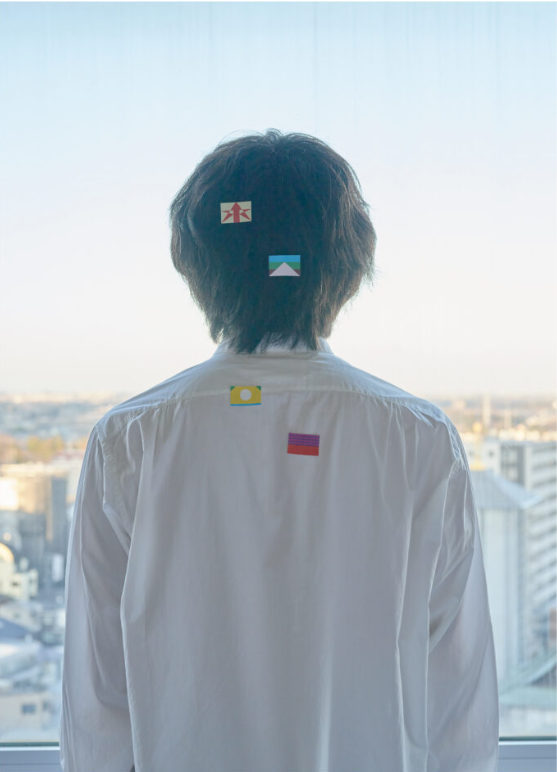
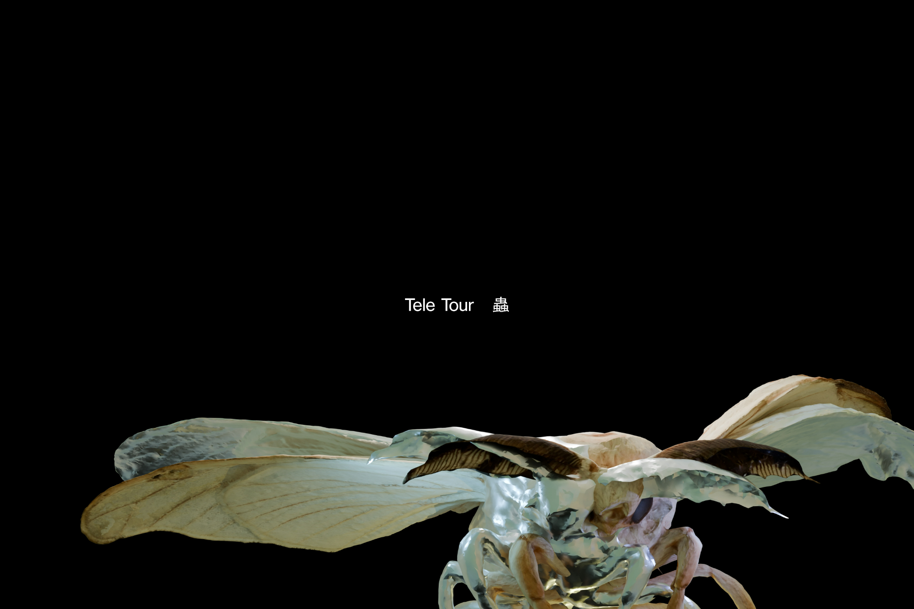

Tele Freaks
~テレフリ~
SONGS
MV
SCHEDULE
REPORTS
COMMENTS
REPORTS

東京宣言
2022.11.2 @ 東京キネマ俱楽部
アンダルシア
バースデイ
私小説
夜行バス
Véranda
誰も愛せない人
花瓶
クレイ
ロックスター
comedy
ghost
ENCORE
東京宣言
生活の折に

蟲
2025.12.13 @ 幕張メッセ
※ツアー期間中のためセットリストは伏せておきます。。
蟲
硝子の線
初恋
サイン
シャドウワークス
砂漠の舟
あいでいて
カルト
DNA
金星
Véranda
包帯
花筏
ロープウェイ
ロックスター
ブルーシフト
バースデイ
鯨の子
繭
ENCORE
生活の折に
ぱらいそ
花瓶